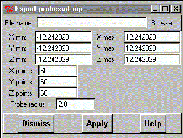

**************************************************************************
Write input coordinates widget
Leif Laaksonen CSC 1996
**************************************************************************
Export coordinates into input files of external programs. Supported
external formats are:
- ICON8 extended Huckel program (located in bin/ directory)
- GAMESS program. This is only a very crude starting input file.
- MOPAC6 program. This is only a very crude starting input file.
- OpenMol program. This is only a very crude starting input file.
- Probesurf program. A Connolly type of program
located in the bin/ directory.
ProbeSurf program input
ProbeSurf program is the program to generate Connolly type of surfaces.
The probe surface program PROBESURF generates a mesh with
grid values from 0 to 100. The value 100 is at the vdW value
and value 0 is at the vdW + max. probe diameter value.
It is possible to generate the surface for different probe values.
The method is based on the article by R. Voorintholt et al.
(Voorintholt R., Koster M.T. , Vegter G. , Vriend G. and
Hol W.G.J., "A very fast program for visualizing protein
surfaces, channels and cavities", J. Mol. Graphics 7
(1989) 243-245)

**************************************************************************
LUL/1996
**************************************************************************